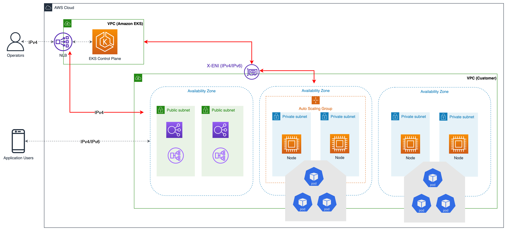

VPC and Subnet Considerations¶
Operating an EKS cluster requires knowledge of AWS VPC networking, in addition to Kubernetes networking.
We recommend you understand the EKS control plane communication mechanisms before you start designing your VPC or deploying clusters into existing VPCs.
Refer to Cluster VPC considerations and Amazon EKS security group considerations when architecting a VPC and subnets to be used with EKS.
Overview¶
EKS Cluster Architecture¶
An EKS cluster consists of two VPCs:
- An AWS-managed VPC that hosts the Kubernetes control plane. This VPC does not appear in the customer account.
- A customer-managed VPC that hosts the Kubernetes nodes. This is where containers run, as well as other customer-managed AWS infrastructure such as load balancers used by the cluster. This VPC appears in the customer account. You need to create customer-managed VPC prior creating a cluster. The eksctl creates a VPC if you do not provide one.
The nodes in the customer VPC need the ability to connect to the managed API server endpoint in the AWS VPC. This allows the nodes to register with the Kubernetes control plane and receive requests to run application Pods.
The nodes connect to the EKS control plane through (a) an EKS public endpoint or (b) a Cross-Account elastic network interfaces (X-ENI) managed by EKS. When a cluster is created, you need to specify at least two VPC subnets. EKS places a X-ENI in each subnet specified during cluster create (also called cluster subnets). The Kubernetes API server uses these Cross-Account ENIs to communicate with nodes deployed on the customer-managed cluster VPC subnets.

As the node starts, the EKS bootstrap script is executed and Kubernetes node configuration files are installed. As part of the boot process on each instance, the container runtime agents, kubelet, and Kubernetes node agents are launched.
To register a node, Kubelet contacts the Kubernetes cluster endpoint. It establishes a connection with either the public endpoint outside of the VPC or the private endpoint within the VPC. Kubelet receives API instructions and provides status updates and heartbeats to the endpoint on a regular basis.
EKS Control Plane Communication¶
EKS has two ways to control access to the cluster endpoint. Endpoint access control lets you choose whether the endpoint can be reached from the public internet or only through your VPC. You can turn on the public endpoint (which is the default), the private endpoint, or both at once.
The configuration of the cluster API endpoint determines the path that nodes take to communicate to the control plane. Note that these endpoint settings can be changed at any time through the EKS console or API.
Public Endpoint¶
This is the default behavior for new Amazon EKS clusters. When only the public endpoint for the cluster is enabled, Kubernetes API requests that originate from within your cluster’s VPC (such as worker node to control plane communication) leave the VPC, but not Amazon’s network. In order for nodes to connect to the control plane, they must have a public IP address and a route to an internet gateway or a route to a NAT gateway where they can use the public IP address of the NAT gateway.
Public and Private Endpoint¶
When both the public and private endpoints are enabled, Kubernetes API requests from within the VPC communicate to the control plane via the X-ENIs within your VPC. Your cluster API server is accessible from the internet.
Private Endpoint¶
There is no public access to your API server from the internet when only private endpoint is enabled. All traffic to your cluster API server must come from within your cluster’s VPC or a connected network. The nodes communicate to API server via X-ENIs within your VPC. Note that cluster management tools must have access to the private endpoint. Learn more about how to connect to a private Amazon EKS cluster endpoint from outside the Amazon VPC.
Note that the cluster's API server endpoint is resolved by public DNS servers to a private IP address from the VPC. In the past, the endpoint could only be resolved from within the VPC.
VPC configurations¶
Amazon VPC supports IPv4 and IPv6 addressing. Amazon EKS supports IPv4 by default. A VPC must have an IPv4 CIDR block associated with it. You can optionally associate multiple IPv4 Classless Inter-Domain Routing CIDR blocks and multiple IPv6 CIDR blocks to your VPC. When you create a VPC, you must specify an IPv4 CIDR block for the VPC from the private IPv4 address ranges as specified in RFC 1918. The allowed block size is between a /16 prefix (65,536 IP addresses) and /28 prefix (16 IP addresses).
When creating a new VPC, you can attach a single IPv6 CIDR block, and up to five when changing an existing VPC. The prefix length of the CIDR block is fixed at /64 for IPv6 VPCs, defining a subnet with many more than one trillion IP addresses. You can request an IPv6 CIDR block from the pool of IPv6 addresses maintained by Amazon.
Amazon EKS clusters support both IPv4 and IPv6. By default, EKS clusters are created using the IPv4 IP family. Specifying IPv6 address family enables the creation of IPv6 clusters. IPv6 clusters require dual-stack VPC and subnets.
Amazon EKS recommends you at least two subnets that are in different Availability Zone during cluster create. The subnets you pass for cluster create are called cluster subnets. When you create a cluster, Amazon EKS creates up to 4 X-ENIs account in the subnets that you specify. The X-ENIs are always installed, and used for cluster administration traffic such as log delivery.
Kubernetes control plane which runs in EKS managed account communicates to worker nodes via cross account ENIs for exec/logs functions. Please refer to the EKS user guide for complete VPC and subnet requirement details.
Kubernetes worker nodes can run in the cluster subnets, but it is not recommended. You can create new subnets dedicated to run nodes and any Kubernetes resources. Nodes can run in either a public or a private subnet. Whether a subnet is public or private refers to whether traffic within the subnet is routed through an internet gateway. Public subnets have a route table entry to the internet through the internet gateway, but private subnets don't.
The traffic that originates somewhere else and reaches your nodes is called ingress. Traffic that originates from the nodes and leaves the network is called egress. Nodes with public or elastic IP addresses within a subnet configured with an internet gateway allow ingress from outside of the VPC. Private subnets usually include a NAT gateway, which only allows ingress traffic to the nodes from within the VPC while still allowing traffic from the nodes to leave the VPC (egress).
In the IPv6 world, every address is internet routable. The IPv6 addresses associated with the nodes and pods are public. Private subnets are supported by implementing an egress-only internet gateways (EIGW) in a VPC, allowing outbound traffic while blocking all incoming traffic. Best practices for implementing IPv6 subnets can be found in the VPC user guide.
You can configure VPC and Subnets in three different ways:¶
Using only public subnets¶
In the same public subnets, both nodes and ingress resources (such as load balancers) are created. Tag the public subnet with kubernetes.io/role/elb to construct load balancers that face the internet. In this configuration, the cluster endpoint can be configured to be public, private, or both (public and private).
Using private and public subnets¶
Nodes are created on private subnets, whereas Ingress resources are instantiated in public subnets. You can enable public, private, or both (public and private) access to the cluster endpoint. Depending on the configuration of the cluster endpoint, node traffic will enter via the NAT gateway or the ENI.
Using only private subnets¶
Both nodes and ingress are created in private subnets. Using the kubernetes.io/role/internal-elb subnet tag to construct internal load balancers. Accessing your cluster's endpoint will require a VPN connection. You must activate AWS PrivateLink for EC2 and all Amazon ECR and S3 repositories. Only the private endpoint of the cluster should be enabled. We suggest going through the EKS private cluster requirements before provisioning private clusters.
Communication across VPCs¶
There are many scenarios when you require multiple VPCs and separate EKS clusters deployed to these VPCs. Multiple VPCs are needed when you have to support security, billing, multiple regions, or internal charge-back requirements. We recommend following the design patterns mentioned in the VPC-to-VPC connectivity guide to integrate multiple Amazon VPCs into a larger virtual network.
VPC connectivity is best achieved when using non-overlapping IP ranges for each VPC being connected. For operational efficiency, we strongly recommend deploying EKS clusters and nodes to IP ranges that do not overlap. We suggest Private NAT Gateway, or VPC CNI in custom networking mode in conjunction with transit gateway to integrate workloads on EKS to solve overlapping CIDR challenges while preserving routable RFC1918 IP addresses. Consider utilizing AWS PrivateLink, also known as an endpoint service, if you are the service provider and would want to share your Kubernetes service and ingress (either ALB or NLB) with your customer VPC in separate accounts.
Sharing VPC across multiple accounts¶
Customers can share subnets with other AWS accounts inside the same AWS Organization via VPC sharing. Sharing a VPC is advised for larger organizations aiming to achieve separation of roles. VPC sharing is beneficial for a central networking team administering a centrally managed VPC, routing, and IP address allocation, while letting application owners to retain ownership over their own resources, accounts, and security groups. Consider VPC sharing to save costs by reusing NAT gateways, VPC interface endpoints, and intra-Availability Zone traffic. You may increase subnet density and prevent subnet fragmentation with VPC sharing.
You can use VPC sharing with EKS clusters. We propose creating distinct subnets and EKS clusters for each application team. Please refer to this blog post to learn more about VPC sharing.
Security Groups¶
A security group controls the traffic that is allowed to reach and leave the resources that it is associated with. Amazon EKS uses security groups to manage the communication between the control plane and nodes. When you create a cluster, Amazon EKS creates a security group that's named eks-cluster-sg-my-cluster-uniqueID. EKS associates these security groups to the managed ENIs and the nodes. The default rules allow all traffic to flow freely between your cluster and nodes, and allows all outbound traffic to any destination.
When you create a cluster, you can specify your own security groups. Please see recommendation for security groups when you specify own security groups.
Recommendations¶
Consider Multi-AZ Deployment¶
AWS Regions provide multiple physically separated and isolated Availability Zones (AZ), which are connected with low-latency, high-throughput, and highly redundant networking. With Availability Zones, you can design and operate applications that automatically fail over between Availability Zones without interruption. Amazon EKS strongly recommends deploying EKS clusters to multiple availability zones. Please consider specifying subnets in at least two availability zones when you create the cluster.
Kubelet running on nodes automatically adds labels to the node object such as topology.kubernetes.io/region=us-west-2, and topology.kubernetes.io/zone=us-west-2d. We recommend to use node labels in conjunction with Pod topology spread constraints to control how Pods are spread across zones. These hints enable Kubernetes scheduler to place Pods for better expected availability, reducing the risk that a correlated failure affects your whole workload. Please refer Assigning nodes to Pods to see examples for node selector and AZ spread constraints.
You can define the subnets or availability zones when you create nodes. The nodes are placed in cluster subnets if no subnets are configured. EKS support for managed node groups automatically spreads the nodes across multiple availability zones on available capacity. Karpenterwill honor the AZ spread placement by scaling nodes to specified AZs if workloads define topology spread limits.
AWS Elastic Load Balancers are managed by the AWS Load Balancer Controller for a Kubernetes cluster. It provisions an Application Load Balancer (ALB) for Kubernetes ingress resources and a Network Load Balancer (NLB) for Kubernetes services of type Loadbalancer. The Elastic Load Balancer controller uses tags to discover the subnets. ELB controller requires a minimum of two availability zones (AZs) to provision ingress resource successfully. Consider setting subnets in at least two AZs to take advantage of geographic redundancy's safety and reliability.
Deploy Nodes to Private Subnets¶
A VPC including both private and public subnets is the ideal method for deploying Kubernetes workloads on EKS. Consider setting a minimum of two public subnets and two private subnets in two distinct availability zones. The related route table of a public subnet contains a route to an internet gateway . Pods are able to interact with the Internet via a NAT gateway. Private subnets are supported by egress-only internet gateways in the IPv6 environment (EIGW).
Instantiating nodes in private subnets offers maximal control over traffic to the nodes and is effective for the vast majority of Kubernetes applications. Ingress resources (like as load balancers) are instantiated in public subnets and route traffic to Pods operating on private subnets.
Consider private only mode if you demand strict security and network isolation. In this configuration, three private subnets are deployed in distinct Availability Zones within the AWS Region's VPC. The resources deployed to the subnets cannot access the internet, nor can the internet access the resources in the subnets. In order for your Kubernetes application to access other AWS services, you must configure PrivateLink interfaces and/or gateway endpoints. You may setup internal load balancers to redirect traffic to Pods using AWS Load Balancer Controller. The private subnets must be tagged (kubernetes.io/role/internal-elb: 1) for the controller to provision load balancers. For nodes to register with the cluster, the cluster endpoint must be set to private mode. Please visit private cluster guide for complete requirements and considerations.
Consider Public and Private Mode for Cluster Endpoint¶
Amazon EKS offers public-only, public-and-private, and private-only cluster endpoint modes. The default mode is public-only, however we recommend configuring cluster endpoint in public and private mode. This option allows Kubernetes API calls within your cluster's VPC (such as node-to-control-plane communication) to utilize the private VPC endpoint and traffic to remain within your cluster's VPC. Your cluster API server, on the other hand, can be reached from the internet. However, we strongly recommend limiting the CIDR blocks that can use the public endpoint. Learn how to configure public and private endpoint access, including limiting CIDR blocks.
We suggest a private-only endpoint when you need security and network isolation. We recommend using either of the options listed in the EKS user guide to connect to an API server privately.
Check available IPs¶
When you create a cluster, Amazon EKS creates up to 4 elastic network interfaces in the cluster subnets. When you upgrade the cluster, Amazon EKS creates new X-ENIs and deletes the old ones when the upgrade is successful. Amazon EKS recommends a netmask of /28 (16 IP addresses) for cluster subnets to accommodate upgrades of the cluster.
Before building VPC and subnets, it is advised to work backwards from the required workload scale. When clusters are built using “ekstcl”, /19 subnets are created by default. A netmask of /19 is suitable for the majority of workload types. To learn about Pod IP allocations, refer Amazon VPC CNI. Consider using subnet-calc, a tool developed by EKS to help with subnet sizing.
For IPv6 VPCs, a subnet's CIDR block has a fixed prefix length of /64. We recommend to deploy nodes and workloads to cluster subnets to maximize IP usage.
Configure Security Groups Carefully¶
Amazon EKS supports using custom security groups. Any custom security groups must allow communication between nodes and the Kubernetes control plane. Please check port requirements and configure rules manually when your organization doesn't allow for open communication.
EKS applies the custom security groups that you provide during cluster creation to the managed interfaces (X-ENIs). However, it does not immediately associate them with nodes. While creating node groups, it is strongly recommended to associate custom security groups manually. Please consider enabling securityGroupSelector to enable Karpenter node template discovery of custom security groups during autoscaling of nodes.
We strongly recommend creating a security group to allow all inter-node communication traffic. During the bootstrap process, nodes require outbound Internet connectivity to access the cluster endpoint. Evaluate outward access requirements, such as on-premise connection and container registry access, and set rules appropriately. Before putting changes into production, we strongly suggest that you check connections carefully in your development environment.
Deploy NAT Gateways in each Availability Zone¶
If you deploy nodes in private subnets (IPv4 and IPv6), consider creating a NAT Gateway in each Availability Zone (AZ) to ensure zone-independent architecture and reduce cross AZ expenditures. Each NAT gateway in an AZ is implemented with redundancy.
Use Cloud9 to access Private Clusters¶
AWS Cloud9 is a web-based IDE than can run securely in Private Subnets without ingress access, using AWS Systems Manager. Egress can also be disabled on the Cloud9 instance. Learn more about using Cloud9 to access private clusters and subnets.